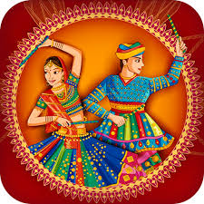

Dance Forms Of India
Dance is a form of expressive movement that involves rhythm, music, and often storytelling. It is a universal art form with a rich history and diverse styles that have evolved over time and across cultures.
India has a rich and diverse tradition of dance, with various classical and folk dance forms that are deeply rooted in its cultural heritage.
Here are some of the prominent dance forms of India:
Bharatanatyam
Kathak
Kathakali
Odissi
Kuchipudi
Manipuri
Folk Dances
Garba
Bharatanatyam
Bharatanatyam is one of the oldest and most widely practiced classical dance forms in India. It originated in the temples of Tamil Nadu, South India, and has a history that dates back thousands of years.
Here are some key features and aspects of Bharatanatyam:
History and Origin:
Bharatanatyam has ancient roots and is associated with the Devadasi tradition, where temple dancers dedicated their art to the deities. Over the years, it evolved from a sacred form to a classical art performed on stage.
Elements of Bharatanatyam:
Nritta (Pure Dance): Involves intricate footwork, rhythmic movements, and geometric poses.
Nritya (Expression): Incorporates facial expressions (abhinaya), hand gestures (mudras), and body language to convey emotions and tell stories.
Natya (Drama): The combination of Nritta and Nritya to present a complete performance with narrative elements.
Adavus:
Bharatanatyam is characterized by a set of fundamental movements called adavus, which include various combinations of footwork, hand gestures, and body movements. Different styles and schools of Bharatanatyam may have variations in the adavus they use.
Mudras (Hand Gestures):
Bharatanatyam employs a sophisticated system of hand gestures called mudras, each representing different aspects of emotions, objects, or characters in a story.
Abhinaya (Expression):
The expressive aspect of Bharatanatyam involves the use of facial expressions, body language, and hand gestures to convey the emotions and meaning of a song or story.
Costumes and Makeup:
Dancers wear traditional attire, including a colorful silk saree, jewelry, and bells around the ankles. The makeup is elaborate, with distinctive eye makeup and facial adornments.
Music:
Bharatanatyam is accompanied by classical Carnatic music. The dance often follows the rhythmic patterns of the music, and the lyrics of the songs (often in Tamil, Telugu, or Sanskrit) contribute to the storytelling.
Repertoire:
Performances typically include a series of items, starting with an invocatory piece (Alarippu), followed by a pure dance sequence (Jatiswaram), expressive pieces (Padams), and concluding with a fast-paced, rhythmic piece (Tillana).
Gurus and Schools:
Bharatanatyam is traditionally taught in a guru-shishya (teacher-disciple) tradition. Several prominent dance schools and gurus have contributed to the preservation and development of this art form.
Global Recognition:
Bharatanatyam has gained international acclaim, with dancers and schools around the world practicing and performing this classical dance form. It has become a symbol of India's rich cultural heritage.
Bharatanatyam continues to be a dynamic and evolving art form, with dancers incorporating contemporary themes while preserving its traditional essence. It plays a significant role in the cultural and spiritual life of South India and has a lasting impact on the world of performing arts.
Kathak
Kathak is one of the classical dance forms of India, with its roots in the northern regions of the country. It is characterized by its intricate footwork, expressive gestures, and storytelling through dance. The word "Kathak" is derived from the Sanskrit word "katha," which means story, and "kathaka," which means storyteller.
Key features of Kathak:
Footwork (Tatkar): Kathak is known for its complex and rhythmic footwork, called tatkar. Dancers use ankle bells (ghungroo) to emphasize the rhythm and create intricate patterns with their feet.
Hand Gestures (Mudras): Like other classical Indian dance forms, Kathak uses a rich vocabulary of hand gestures, known as mudras, to convey different emotions and tell stories. Each mudra has a specific meaning.
Expression (Abhinaya): Kathak dancers excel in abhinaya, which is the expressive aspect of dance involving facial expressions and body movements to convey emotions and narratives.
Spins (Chakkar): Kathak is known for its graceful spins or chakkars. Dancers can execute multiple spins in rapid succession, adding a dynamic and visually appealing element to the performance.
Costumes and Jewelry: Kathak costumes are typically elaborate and include a flowing skirt-like garment (ghagra or lehenga), a blouse (choli), and a scarf (dupatta). The dancers often wear traditional Indian jewelry.
Music: Kathak is often performed to classical Indian music, and the dance is closely linked to various musical compositions. The rhythmic patterns in Kathak are often synchronized with the beats of the accompanying tabla and other musical instruments.
Gharanas: Kathak has several distinct schools or styles known as gharanas, each with its own unique characteristics. Some of the prominent gharanas include the Jaipur, Lucknow, and Banaras gharanas.
History and Evolution: Kathak has evolved over centuries, influenced by various cultural and historical factors. It has roots in the storytelling traditions of ancient India and has been enriched through contributions from different regions and communities.
Kathak has gained recognition and popularity not only in India but also internationally. Dancers often undergo rigorous training to master the technical and expressive aspects of this art form. Today, Kathak continues to thrive as a dynamic and vibrant classical dance style that combines tradition with innovation.
Kathakali
Kathakali is a traditional dance-drama form that originated in the southern Indian state of Kerala. Known for its elaborate makeup, vibrant costumes, and stylized movements, Kathakali is a highly expressive art form that combines dance, music, and acting.
Here are some key features and aspects of Kathakali:
Origin and History:
Kathakali has its roots in ancient temple and folk arts of Kerala. It developed as a distinct art form in the 17th century, combining elements of classical dance, drama, and ritualistic performance.
Characteristics:
Elaborate Makeup and Costumes: One of the most distinctive features of Kathakali is the elaborate makeup, known as "chutti," and colorful costumes. The makeup helps in portraying different characters, and the costumes are often large and stylized, contributing to the visual spectacle.
Mudras and Facial Expressions: Kathakali places a strong emphasis on mudras (hand gestures) and facial expressions (rasas). The performers use a wide range of facial expressions to convey emotions and tell stories.
Stylized Movements: The movements in Kathakali are highly stylized and follow a codified set of gestures, postures, and steps. The dancers use angular and dramatic movements to portray characters and events.
Characters and Stories:
Kathakali often depicts stories from Indian epics, particularly the Ramayana and Mahabharata. The characters include gods, goddesses, heroes, demons, and mythical beings. Each character has a specific style of makeup and costume.
Mudras and Gestures:
The dance incorporates a rich vocabulary of mudras and gestures that convey specific meanings. These gestures, combined with facial expressions, help in the narration of complex stories.
Music and Instruments:
The musical accompaniment in Kathakali is provided by a traditional orchestra known as the "Percussion Ensemble" or "Panchavadyam." Instruments include chenda (drums), maddalam (barrel-shaped drum), elathalam (cymbals), and shankh (conch).
Training and Traditions:
Kathakali training is rigorous and involves years of practice. Performers, known as "artists" or "actors," undergo extensive training in dance, expression, and the use of vocal techniques.
Regional Styles:
Kathakali has different regional styles, each with its unique characteristics. The major styles are the southern style (Kalladikkodan), central style (Kottakkal), and northern style (Vettath).
Modern Adaptations:
While Kathakali maintains its traditional elements, contemporary artists have explored new themes and adapted the form to contemporary contexts, bringing innovation to the art form.
Kathakali is celebrated for its visual richness, powerful storytelling, and the combination of various art forms to create a unique and immersive theatrical experience.
Odissi
Odissi is one of the classical dance forms of India, originating from the state of Odisha in the eastern part of the country. It has a rich history and is deeply rooted in the cultural and religious traditions of the region.
Here are some key features and aspects of Odissi dance:
History and Origins:
Odissi has ancient roots, with references to dance and music found in ancient texts and sculptures in the temples of Odisha. It is believed to have evolved as a devotional art form, with its early practitioners being temple dancers known as Maharis.
Costume and Attire:
The costume of Odissi dancers is elaborate and colorful. Female dancers typically wear a traditional attire known as the "Saree" with intricate designs, and the jewelry and makeup are also distinctive.
Mudras and Gestures:
Like other classical Indian dance forms, Odissi makes use of a rich vocabulary of mudras (hand gestures) and facial expressions (bhavas) to convey emotions and tell stories. The intricate hand movements are an essential aspect of the dance.
Footwork:
Odissi dance involves intricate footwork, with the dancer creating rhythmic patterns on the floor. The movements are characterized by a series of bends and curves, giving it a graceful and flowing appearance.
Postures and Body Movements:
The dance form includes a variety of postures and body movements, including tribhangi (three bends), where the body is divided into three parts: head, torso, and hips.
Music and Instruments:
Odissi dance is accompanied by traditional Odissi music, which includes classical ragas and talas. The musical instruments commonly used in Odissi performances include the mardala (a percussion instrument), flute, and violin.
Themes and Repertoire:
Odissi dance often portrays mythological stories, devotional themes, and traditional folklore. The repertoire includes traditional compositions as well as more contemporary pieces created by modern choreographers.
Gurus and Schools:
Odissi has been passed down through generations by a guru-disciple tradition. Several renowned gurus and dance schools have contributed to the preservation and development of this art form.
Recognition and Revival:
In the mid-20th century, Odissi faced a period of decline, but efforts by dedicated artists and scholars led to its revival. Today, it is recognized as one of the eight classical dance forms of India.
Odissi dance continues to evolve with contemporary influences while maintaining its traditional essence. It has gained popularity not only in India but also internationally, with performers and enthusiasts appreciating its beauty and cultural significance.
Kuchipudi
Kuchipudi is a traditional Indian classical dance form that originated in the state of Andhra Pradesh, India. It is named after the village of Kuchipudi in the Krishna district of Andhra Pradesh, where it is believed to have been developed.
Here are some key aspects of Kuchipudi:
Origin: Kuchipudi has ancient roots and is often traced back to the 17th century. It is said to have been founded by the legendary dance teacher Siddhendra Yogi. The dance form has evolved over the centuries and incorporates elements of dance, drama, and music.
Style and Technique: Kuchipudi is known for its graceful movements, intricate footwork, and expressive facial expressions. The dance form includes a combination of pure dance (Nritta), expressive dance (Nritya), and dramatic elements (Natya). Dancers wear colorful costumes and jewelry that are characteristic of the region.
Narrative Tradition: One unique aspect of Kuchipudi is its emphasis on storytelling. Dancers often perform pieces from Hindu mythology and epics such as the Mahabharata and Ramayana. The dancer not only performs the dance but also enacts the characters and conveys the emotions of the story through facial expressions and gestures.
Music and Instruments: Kuchipudi is accompanied by classical Carnatic music. The musical compositions are an integral part of the dance, enhancing the overall performance. Traditional instruments such as the mridangam (a percussion instrument), violin, flute, and veena are commonly used in Kuchipudi performances.
Costumes and Makeup: The costumes in Kuchipudi are vibrant and elaborate. Female dancers typically wear a sari with a special pleated drape, while male dancers wear dhotis or similar traditional attire. Makeup is also an essential aspect, with the use of bold colors to highlight facial expressions and features.
Mudras and Abhinaya: Like many classical Indian dance forms, Kuchipudi uses a rich vocabulary of hand gestures known as mudras. These mudras, along with facial expressions (abhinaya), are crucial for conveying emotions and telling stories without words.
Training: Learning Kuchipudi involves rigorous training under the guidance of a guru (teacher). The training covers not only the physical aspects of dance but also the theoretical and cultural aspects, ensuring a holistic understanding of the art form.
Kuchipudi has gained recognition both within India and internationally, contributing to the rich tapestry of Indian classical arts. Dancers often travel to showcase their talent, and there are dedicated schools and institutions for the training and promotion of Kuchipudi.
Manipuri
Manipuri is a classical dance form that originated in the northeastern Indian state of Manipur. It is known for its graceful and lyrical movements, vibrant costumes, and emphasis on devotional themes. Manipuri dance has a strong connection to the religious and cultural traditions of Manipur and is deeply rooted in the region's folklore and mythology.
Here are some key features and aspects of Manipuri dance:
Origin and History:
Manipuri dance has ancient origins and is associated with the Vaishnavite tradition of Hinduism. It is believed to have been inspired by the traditional dance forms of Manipur, which have been practiced for centuries.
The dance form flourished under the patronage of the Manipuri kings and gained prominence in the 18th century.
Styles of Manipuri Dance:
There are two main styles of Manipuri dance: the classical style known as "Rasa Lila" and the folk style known as "Lai Haraoba."
Rasa Lila is a dance-drama that narrates the love stories of Radha and Krishna. It is characterized by graceful movements, delicate footwork, and expressive facial expressions.
Lai Haraoba is a ritualistic dance performed during the Lai Haraoba festival in Manipur. It involves vibrant group dances depicting the creation of the world and the life of the local deities.
Costumes and Ornaments:
Manipuri dance costumes are known for their rich and colorful attire. Female dancers typically wear a cylindrical, stiff, and colorful skirt called a "potloi," which accentuates the swirling movements of the dance.
The male dancers wear traditional dhotis and may also wear turbans or other traditional headgear.
Elaborate jewelry, including necklaces, earrings, and bangles, is an integral part of the Manipuri dance costume.
Instruments and Music:
The music for Manipuri dance is based on classical Manipuri ragas and is accompanied by traditional musical instruments such as the pung (a barrel-shaped drum), kartal (cymbals), flute, and pena (a string instrument).
The rhythmic patterns of the pung are significant, and the drummers play an essential role in coordinating with the dancers.
Mudras and Expressions:
Manipuri dance uses a unique set of hand gestures, known as mudras, to convey emotions and tell stories. The movements are characterized by soft and flowing gestures that complement the gentle and devotional nature of the dance.
Training and Education:
Manipuri dance is traditionally taught in the guru-shishya parampara, where the student learns directly from the guru (teacher).
Many institutions and schools in Manipur and other parts of India offer training in Manipuri dance, contributing to the preservation and promotion of this traditional art form.
Manipuri dance has gained recognition both nationally and internationally for its cultural significance and artistic beauty. It continues to be an important part of the cultural heritage of Manipur and India as a whole.
Folk Dances
 Folk dances are traditional dances that have originated and evolved within the cultural and social traditions of a specific community, region, or ethnic group. These dances are often passed down through generations and reflect the history, customs, rituals, and daily life of the people who practice them. Folk dances are diverse and can be found in various forms across the globe, each with its unique style, costumes, and music.
Folk dances are traditional dances that have originated and evolved within the cultural and social traditions of a specific community, region, or ethnic group. These dances are often passed down through generations and reflect the history, customs, rituals, and daily life of the people who practice them. Folk dances are diverse and can be found in various forms across the globe, each with its unique style, costumes, and music.
Here are some general characteristics and aspects of folk dances:
Cultural Diversity:
Folk dances are highly diverse and are associated with specific regions, communities, or ethnic groups. Different cultures around the world have their own unique folk dance traditions.
Social and Cultural Context:
Folk dances are deeply rooted in the social and cultural life of the people. They often serve as a means of expressing identity, celebrating festivals, commemorating historical events, or participating in rituals and ceremonies.
Costumes and Attire:
Traditional costumes play a significant role in folk dances, reflecting the cultural identity of the community. The attire is often adorned with vibrant colors, patterns, and symbolic elements that carry cultural significance.
Music and Instruments:
Folk dances are accompanied by traditional music, which is often played on indigenous instruments. The music is integral to the dance and contributes to the overall cultural experience. Common instruments include drums, flutes, string instruments, and percussion instruments.
Celebratory and Ritualistic Nature:
Many folk dances are performed during festivals, weddings, harvest celebrations, and other important events. Some folk dances also have ritualistic elements, connecting them to religious or spiritual practices.
Community Participation:
Folk dances are usually communal activities that involve the participation of the entire community. They are often passed down from one generation to the next through oral tradition and practical demonstration.
Storytelling and Expressiveness:
Folk dances often tell stories or convey messages through movements, gestures, and facial expressions. The dance steps may depict aspects of daily life, nature, mythology, or historical events.
Preservation and Revival:
In many cases, efforts are made to preserve and revive traditional folk dances, especially when they are at risk of being lost due to cultural changes or modernization. Cultural organizations, institutions, and enthusiasts may play a role in these preservation efforts.
Examples of folk dances from around the world include the Tarantella in Italy, Cossack dances in Russia, Hula in Hawaii, Flamenco in Spain, Bhangra in Punjab, and many others. Each dance form carries its unique charm, reflecting the cultural richness and diversity of the communities that practice them.
Garba

Garba is a traditional dance form that originated in the state of Gujarat in India. It is closely associated with the Navaratri festival, a Hindu celebration that spans nine nights dedicated to the worship of the goddess Durga. Garba is performed in groups, typically in concentric circles, by both men and women, and it involves rhythmic clapping, circular movements, and vibrant costumes. The dance is often accompanied by traditional folk music.
Key features of Garba include:
Navaratri Festival:
Garba is an integral part of the Navaratri festival, which honors the goddess Durga in her various forms. Navaratri is celebrated over nine nights and usually takes place in September or October.
Dance Form:
Garba is characterized by the circular movements of dancers, usually in a concentric formation. The circular pattern represents the cyclical nature of life, death, and rebirth.
Rhythmic Clapping:
Participants in Garba clap their hands rhythmically while moving in a circular pattern. The clapping is an essential element of the dance, contributing to the overall festive and energetic atmosphere.
Traditional Costumes:
Dancers wear colorful and traditional attire, often featuring vibrant chaniya cholis (skirt and blouse) for women and kediyus (traditional tops) or kafni pajamas for men. The costumes are adorned with embroidery and mirror work, adding to the festive look.
Dandiya Raas:
Dandiya Raas is a related dance form often performed in conjunction with Garba. It involves dancers holding small, decorated sticks known as dandiyas, which are struck together in a synchronized manner. Dandiya Raas adds an extra layer of complexity and excitement to the festivities.
Folk Music:
Garba is accompanied by traditional folk music, often featuring instruments like the dhol (drum), tabla, and dholak. The music is lively and adds to the celebratory atmosphere of the dance.
Devotional Themes:
While Garba is a festive dance, it also has devotional elements, as it is performed during Navaratri to celebrate the goddess Durga. Some Garba songs may have religious or mythological themes.
Social and Community Aspect:
Garba is a social dance, and communities come together to participate in the celebrations. It is not only a religious or cultural event but also a social gathering that fosters a sense of unity and joy.
Garba has transcended its regional roots and has become popular across India and in many places around the world with Indian diaspora communities. During the Navaratri season, Garba events are organized on a large scale, attracting participants of all ages and backgrounds to join in the festive celebrations.